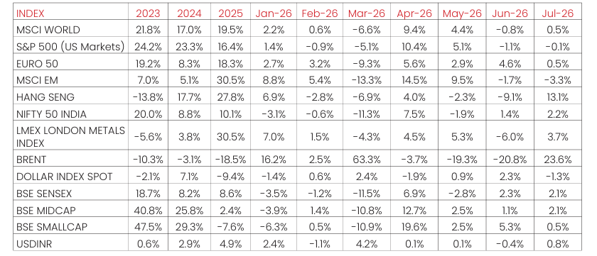

Macro and
Equity Market
Outlook
Equity Market
Outlook
GLOBAL MACRO & MARKETS
India’s NSE NIFTY 50 Index ended the month of July 2026 in green (2.2%).
Among major global indices, the Japanese NIKKEI (-8.1%), Morgan Stanley
Capital International (MSCI) World (0.5%), the Euro 50 (+0.5%) and the S&P
500 (-0.1%) ended the month of July 2026 with mixed returns.
Performance was mixed among Emerging Market (EM) indices in July
2026, with the MSCI EM, Hang Seng, BOVESPA Brazil recording sequential
returns of (-3.3%), (13.1%), and (3.5%) respectively.
The London Metals Exchange (LME) Metals Index gained (3.7%) in July
2026. West Texas Intermediate (WTI) ended in green MoM, by (21.8%) and
Brent Crude rose MoM, by (23.6%), as markets remained cautious given
geopolitical uncertainty.
The Dollar Index dropped by (-1.3%), through July 2026, with the US Dollar
(USD) appreciating vis-à-vis Emerging Market (EM) currencies (-0.1%) and
appreciating marginally against the Indian Rupee (INR) on the spot market
(0.8%). Bond yields moved unevenly, with India’s 10Y G-Sec yields gained
by 8.8 bps, while US 10Y G-Sec yields climbing 27 bps, and the German
Bund yield rose by 34.6 bps, with rates settling at 6.83%, 4.73% and 3.21%,
respectively.
Domestic Macro & Markets
The BSE SENSEX climbed (+2.10%) in July 2026, in line with the NSE NIFTY
Index. The BSE Mid-cap index & the BSE Small-Cap index, rising by (+2.1%)
& (+0.5%), over the month of July 2026, respectively. Sector-wise, Banks,
Realty and Media were the top outperformers over the month of July
2026, clocking (+6.1%), (+6.0%) and (+5.0%) respectively. BSE Sensex’s 13
major sectoral indices posted mixed performance in July 2026.

Net Foreign Institutional Investors (FII) flows into equities were positive for
July 2026 at ($ 2.12 Bn), following (-$5.16 Bn) in June 2026. Domestic
Institutional Investors (DIIs) remained net buyers of Indian equities for the
36th consecutive month with flows of (+$8.3) Bn in July 2026 compared to
(+8.3 Bn) in June 2026.
India's high frequency data update:
Manufacturing PMI eased to its lowest level since August 2021, GST
collections remained robust driven by a sharp rise in import revenue, core
sector and industrial output rebounded, credit growth accelerated
marginally, while inflation edged higher and the overall trade deficit widened.
Purchasing Managers’ Index Manufacturing PMI:
53.5, down from 54.2 in June, marking the weakest growth since August
2021. While the sector remained firmly in growth territory, softer demand -
especially weaker export orders to Europe- dragged on output, new orders,
and employment.
Goods and Services Tax (GST) Collection:
Gross collections of INR 2.11 Tn (+15.4% YoY) in July 2026 the Gross
Domestic Revenue stood at Rs 1.44 lakh crore, rose +10.1%, while Gross
Import Revenue stood at Rs 0.66 lakh crore, marking a sharp rise of 28.8%
during the month.
Core Sector Production:
The index of eight core sector industries grew moderately (+5% YoY) in
June 2026, against a (+0.5% YoY) growth in May 2026. The production of
Electricity, Cement and Steel recorded growth in June 2026. The
production of Electricity, Cement and Steel recorded growth in June 2026
by (+9.8% YoY), (+9.8% YoY) and (+4.6% YoY) respectively.
Industrial Production:
Factory output growth as measured by the Index of Industrial Production
(IIP) grew YoY by (+7.3%) in June 2026, vs a growth of (+5.1%) YoY in May
2026. The growth rates of the Four sectors, Mining & Quarrying,
Manufacturing, Electricity & Gas Supply and Water Supply, Sewerage &
Waste Management for the month of June 2026 are (1%), (7.8%), (+10.6%)
and (+6.1%) YoY respectively.
Credit growth:
Scheduled Commercial Bank Credit growth in July 2026 increased
marginally to (+17.7 %) YoY vs (+16.2%) YoY in June 2026. Agriculture and
allied activities credit in June 2026 grew by (+16.8%) YoY, while industrial
sector credit grew by (+19.2%) YoY, the services sector credit grew by
(+2.4%) YoY.
Inflation:
For June 2026, the Consumer Price Index (CPI) inflation rate rose YoY to
(+4.38%), up from (+3.93%) in May 2026. Food inflation accelerated
further to (+5.32%) YoY, compared to (+4.78%) in May. The Wholesale
Price Index (WPI) inflation remained elevated at around (+9.9%) YoY
compared to (+9.7%) YoY in May 2026. The positive rate of inflation in June
2026 was primarily due to increases in prices of mineral oils, crude
petroleum & natural gas, basic metals, jewellery, vegetables, and housing
costs, while deflationary trends were observed in items like potatoes, peas,
and motor vehicles.
Trade Deficit:
Indian Merchandise Exports rose by (+15.5%) YoY to $40.41 Bn in June
2026. Imports rose by (+31.0%) YoY to $70.84 Bn. India's overall
(merchandise + services) trade deficit widened to $15.31 billion in June
2026, up from $10.51 billion in May 2026 and $2.89 billion a year earlier.
Events to watch out for in August 2026
RBI MPC Meeting (August 3–5):
The Monetary Policy Committee met
early this month, with RBI Governor announcing on August 5 that the repo
rate will remain unchanged at 5.25%. The central bank noted that while
overall inflation is modest, risks from food and fuel prices persist. With
average banking liquidity remaining above ₹1 lakh crore since June, credit
markets and bond yields will continue to be heavily influenced by the RBI's
data-dependent stance. The RBI also upped its GDP growth estimates by
10bps to 6.7% for the year and reduced inflation estimates by 10bps to
5.0%.
Corporate Earnings Season (Deadline August 14):
The Q1 FY27
earnings season continues at a rapid pace ahead of the SEBI regulatory
deadline of August 14 for most listed companies. Early trends show
outperformance in the financial and chemical sectors. Investor sentiment
may hinge heavily on operating margins, rural recovery commentary, and
how companies are managing localized input costs.
Inflation & Macro Data (August 12):
The critical Consumer Price Index
(CPI) inflation data for July 2026 will be released on August 12. Following
the RBI's recent cautious commentary on food prices, this print will be
essential for gauging domestic consumption momentum. It will be
accompanied by the Index of Industrial Production (IIP) and Wholesale
Price Index (WPI) releases, which will highlight output strength across
manufacturing and mining.
Tax Compliance & Deadlines (August 31):
While the standard ITR filing
deadline concluded on July 31, taxpayers filing belated returns will now
face a late fee of up to ₹5,000 under Section 234F. Additionally, August 31
is the official deadline for eligible taxpayers (such as freelancers and small
businesses) to file ITR-3 and ITR-4 without an audit requirement.
Political Developments (Monsoon Session):
The ongoing Monsoon
Session of Parliament is scheduled to conclude on August 13, 2026,. As the
session wraps up, markets will monitor the progression of pending bills,
regulatory reforms, and any debates concerning national policies or
regional developments.
Global Cues & Index Rebalancing:
In addition to monitoring US Federal
Reserve rate expectations and ongoing geopolitical tensions in the Middle
East, markets are focused on the MSCI Quarterly Index Review. The review
announcement is scheduled for August 12, with adjustments taking effect
on September 1. These rebalancing changes may often trigger significant
foreign institutional investor (FII) capital flows in and out of domestic
equities.
Monthly Performance for Key Indices:

Source:NIMF Research, Bloomberg, RBI
Note: Market scenarios are not reliable indicators for current or future performance. The same should not be construed as investment advice or as any research report/research recommendation.
Past performance may or may not be sustained in future.
Note: Market scenarios are not reliable indicators for current or future performance. The same should not be construed as investment advice or as any research report/research recommendation.
Past performance may or may not be sustained in future.
Market View
Domestic equity markets have remained range-bound, with intermittent
bouts of volatility driven by evolving global trade developments, geopolitical
uncertainties and mixed corporate earnings.
While easing tensions in the Middle East have helped contain crude oil prices
and supported global risk sentiment, investors continue to monitor
developments on the global trade front and major central bank policy
actions.
Lower crude oil prices, a relatively stable Indian Rupee, resilient domestic
macroeconomic fundamentals healthy corporate balance sheets and a
turnaround in foreign institutional investor (FIIs) flows with overseas
investors turning net buyers have provided support to markets. However,
any renewed geopolitical tensions, adverse global policy developments or a
sharper slowdown in global growth could keep markets volatile in the near
term.
Despite these near-term headwinds, improving domestic demand, sustained
government capital expenditure, easing financial conditions and India’s
structural growth drivers may be expected to support the country’s
medium-term economic and earnings outlook.
Following the market correction over the past several months valuations
have become more reasonable particularly within the large-cap segment.
While near-term earnings may face pressure from elevated input costs,
currency weakness and softer global demand the medium- to long-term
structural growth drivers for India might remain intact.
Given geopolitical challenges and its implications, long term investments
may be invested systematically using the current corrective phase of the
market. Fluctuations in commodity prices, supply chain disruptions, currency
movements and global growth concerns are near term factors which may
delay recovery. Hence a systematic approach to adding allocations might
help in potentially lowering the anticipated volatility. The impact of war is
visible on select segments; delayed resolution could lead to downgrade in
earnings.
Asset allocation in line with the risk appetite of the investor is an important
tool to navigate any unanticipated volatility. Accordingly Large Cap & Large
Cap oriented diversified strategies along with hybrid funds might appear to
be better placed on risk-reward basis, while Mid/Small cap allocation may be
considered in a staggered manner through systematic investment with a
long-term view.
Gold & Silver Outlook
After a strong five-year rally, gold (near US$4,200/oz) and silver (around US$65/oz) have entered a
consolidation phase. The pullback is likely due to firmer inflation data, expectations of higher interest
rates and a rotation from defensive assets into equities. However, the structural drivers behind both
metals may remain firmly in place.
The continuing Persian Gulf conflict remains an important source of uncertainty. However, markets appear
more concerned about its impact on energy supplies, inflation, interest rates, and economic activity than about
the geopolitical event itself. Any renewed disruption to shipping or oil supplies could quickly raise inflation
expectations and increase market volatility.
For precious metals, a prolonged conflict is not automatically positive. Higher energy prices may push bond
yields and the US dollar higher, creating short term pressure on gold and silver. Conversely, weaker growth,
falling confidence, or financial instability could strengthen demand for gold as a defensive asset.
Gold experienced significant volatility during the first half of 2026, with a strong rally followed by a sharp
correction and subsequent recovery. This suggests that investors continue to view major declines as potential
accumulation opportunities. However, gold may remain highly sensitive to real interest rates, Federal Reserve
policy, and movements in the US dollar.
The tactical outlook for gold is potentially neutral to moderately bullish, while the longer term structural
outlook remains constructive. Gold might continue to benefit from elevated sovereign debt, reserve
diversification, geopolitical fragmentation, and demand for assets that are not directly linked to government
credit risk. Central bank purchases remain important sources of support.

Silver also retains a constructive longer term outlook but may considerably be more
volatile than gold. Its dual role as a monetary and industrial metal makes it sensitive to
both investor sentiment and global economic activity.
The silver market may remain in deficit during 2026, while physical investment demand
may provide support. However, industrial demand faces pressure from reduced silver
usage and substitution in photovoltaic manufacturing. Demand from data centres, artificial intelligence,
automotive electronics, and electrical infrastructure may partly offset this weakness.
The preferred approach for the remainder of 2026 is gradual accumulation rather than chasing strong rallies.
Key indicators to monitor include US real interest rates, the US dollar, oil prices, central bank policy, investment
flows, and developments affecting energy supplies in the Persian Gulf. For silver, industrial demand,
inventories, physical investment, and the gold to silver ratio are also important.
Note: Market scenarios are not reliable indicators for current or future performance. The same should not be construed as investment advice or as
any research report/research recommendation.
Past performance may or may not be sustained in future.
Past performance may or may not be sustained in future.
Source:
NIMF Research,Bloomberg
Disclaimer:
The current fund philosophy may change in future depending on market conditions or fund manager’s
views. The sectors mentioned are not a recommendation to buy/sell in the said sectors. The information
herein above is meant only for general reading purposes and the views being expressed only constitute
opinions and therefore cannot be considered as guidelines, recommendations or as a professional
guide for the readers. The document has been prepared on the basis of publicly available information,
internally developed data and other sources believed to be reliable. The sponsors, the Investment
Manager, the Trustee or any of their directors, employees, Associates or representatives (‘entities &
their Associate”) do not assume any responsibility for, or warrant the accuracy, completeness, adequacy
and reliability of such information.
Recipients of this information are advised to rely on their own analysis, interpretations & investigations.
Readers are also advised to seek independent professional advice in order to arrive at an informed
investment decision. Entities & the associates including persons involved in the preparation or issuance
of this material, shall not be liable in any way for any direct, indirect, special, incidental, consequential,
punitive, or exemplary damages, including on account of lost profits arising from the information
contained in this material. Recipient alone shall be fully responsible for any decision taken on the basis
of this document.